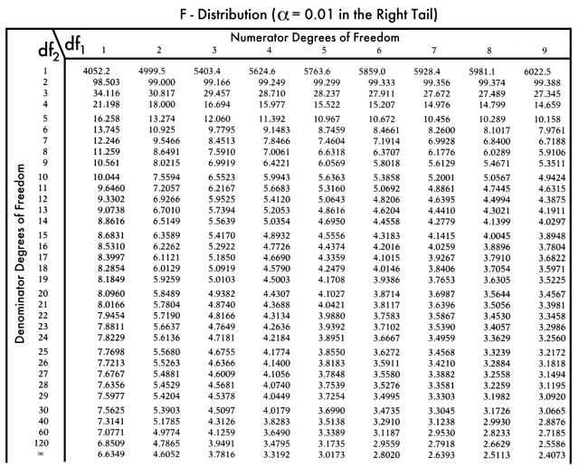

Linear modeling with "fixed effects"
F-statistic
Linear modeling with "fixed effects"
F-statistic
Previously, we explored inference about the difference in central tendencies of 2 groups.
How do we perform hypothesis testing for a difference in central tendency across more than two categories?
Could a similar approach to 2-groups work for multiple categorical variables be applied?
It's not that simple!
We must consider the variability of the data and how they relate to their own group as well as all the other groups.
In which panel are the differences between groups most apparent?
We must consider the variability of the data and how they relate to their own group as well as all the other groups.
In which panel are the differences between groups most apparent?
While the variability between groups in the two panels are similar, the increased variability of the data within the groups (right panel) makes it harder to differentiate the different groups.
An assessment of the difference in means between several groups depends on two kinds of variability:
Just knowing the sample means for the groups is not enough. If the values within each sample are very close to each other, we can detect a small difference in means as significant (as in the left panel). If there is more variability in the samples (as in the right panel), we need the group means to be farther apart.
Why analyze variability to test for a difference between multiple means?
If the null hypothesis is true (no difference between the sample means), the samples ALL come from the same underlying population.
If we select samples of size eight from a population where the mean is 38, how likely is it to see sample means as different as 30.75, 34.0, and 49.25?
We address both of these issues by measuring different aspects of the variability in the data.
Let's investigate the different aspects of variability in data.
We want a single measure that reflects how far apart the means are for all groups, without the need to calculate the difference between all the pairs of group means (as the number of groups increases, the number of pairs would increase even more).
We could calculate how far each group mean is from the "Grand mean" (the overall combined mean) instead.
Variability between groups:
distance from each group means to the Grand Mean.
Variability within groups:
distance from each data point to the Sample Mean.
Total variability:
distance from each data point to the Grand Mean.
Intuitively, for the same total variability, the greater the variability between groups will be compared with the variability within groups, the more likely the groups will be different from one to another.
An ANalysis Of VAriance (ANOVA) is a comparison between the variability between groups to the variability within groups. The statistic of interest that reflects this comparison between the two types of variability when performing an ANOVA is the F-statistic.
Total Variability
Between Groups Variability
Within Groups Variability
Each of these variabilities relies on the calculation of the sums of squares ($SS$) deviations.
Total Variance $SS_{\mathrm{Total}}$
Between Groups Variance $SS_{\mathrm{Groups}}$ (a.k.a $SS_{\mathrm{Between}}$)
"Error" Variance $SS_{\mathrm{Error}}$ (a.k.a. $SS_{\mathrm{Within}}$)
$$\sum_{i=1}^{n}(x_{i}-\hat{x})^2$$
$$\sum_{g=1}^{k}n_{g}(\bar{x}_{g}-\hat{x})^2$$
$$\sum_{g=1}^{k}\sum_{i=1}^{n_g}(x_{gi}-\bar{x}_{g})^2$$
The $F$-statistic is a ratio of the variability between groups and the variability withing groups, but uses the mean variability instead of the total variability for each component.
$F=\frac{\class{danger}{\textrm{Mean variability between groups}}}{\class{info}{\textrm{Mean variability within groups}}}$
$F=\frac{\class{danger}{\textrm{Mean SS}_{Group}}}{\class{info}{\textrm{Mean SS}_{Error}}}= \frac{\class{danger}{\frac{\textrm{SS}_{Group}}{(k-1)}} }{\class{info}{\frac{\textrm{SS}_{Error}}{(n-k)}}}$
Notes
$F=\frac{\class{danger}{\textrm{Mean SS}_{Group}}}{\class{info}{\textrm{Mean SS}_{Error}}}$
$$\sum_{i=1}^{n}(x_{i}-\hat{x})^2$$
$$\sum_{g=1}^{k}n_{g}(\bar{x}_{g}-\hat{x})^2$$
$$\sum_{g=1}^{k}\sum_{i=1}^{n_g}(x_{gi}-\bar{x}_{g})^2$$
The Null Distribution for the $f$-statistic that is described by the parameters for within group ($n-k$) and between group ($k-1$) degrees of freedom.

The Null Distribution for the $f$-statistic that is
described by the parameters for
within group ($n-k$)
and between group ($k-1$) degrees of freedom.
A p-value is obtained by computing the area under the curve for $\mathbb{F}\geq f_{observed}$.
Statistic:
Effect Size:
Statistic:
Effect Size:
University student Dominic Kelly chose to study ant dietary preference as a final term paper for his statistics course.
He recalled being a kid and noticing ants would always find their way to his friend's sandwich, but only sometimes found their way to his own. He decided to throw in a common australian sandwich as well.
He chose sandwiches with fillings:

Mackisack, M., "Favourite Experiments: An Addendum to
What Is the Use of Experiments Conducted by Statistics Students?"
Journal of Statistics Education, 1994
http://www.amstat.org/publications /jse/v2n1/mackisack.supp.html
To conduct the experiment Dominic:
He repeated the process, allowing time for ants to return to the hill after each trial, until he had eight samples for each of the three sandwich fillings.
| Number of ants visiting sandwiches | ||||||||||
| #1 | #2 | #3 | #4 | #5 | #6 | #7 | #8 | $\bar{x}$ | $s^2$ | |
| Vegemite | 18 | 29 | 42 | 42 | 31 | 21 | 38 | 25 | 30.75 | 85.64 |
| Peanut Butter | 43 | 59 | 22 | 25 | 36 | 47 | 19 | 21 | 34.0 | 214.00 |
| Ham & Pickles | 44 | 34 | 36 | 49 | 54 | 65 | 59 | 53 | 49.25 | 116.50 |
Do ants have a preferential sandwich filling

What is our Null Hypothesis?
And the Alternate Hypothesis?
$H_0$: $\mu_\class{warning}{1}=\mu_\class{info}{2}=\mu_\class{danger}{3}$
$H_a$: At least one $\mu_i\neq\mu_j$
With the F-distribution, the sidedness is always $F < f, \therefore 1$.
$\textrm{Grand mean}= (18 + 29 + ... + 59 + 53)/24 = \class{strong}{38}$
| Number of ants visiting sandwiches | |||||||||
| #1 | #2 | #3 | #4 | #5 | #6 | #7 | #8 | $\bar{x}$ | |
| Vegemite | 18 | 29 | 42 | 42 | 31 | 21 | 38 | 25 | 30.8 |
| Peanut Butter | 43 | 59 | 22 | 25 | 36 | 47 | 19 | 21 | 34.0 |
| Ham & Pickles | 44 | 34 | 36 | 49 | 54 | 65 | 59 | 53 | 49.3 |
Variability between groups: Sum of squares of the distance from each group means to the Grand mean.
$\sum_{g=1}^{k}n_{g}(\bar{x}_{g}-\hat{x})^2$
$8\times (30.8-38)^2 + 8\times (34-38)^2$
$+ 8\times (49.3-38)^2 = \class{danger}{1561}$
Variability within groups: Sum of squares of the distance from each data point to their sample mean.
$\sum_{g=1}^{k}\sum_{i=1}^{n_g}(x_{gi}-\bar{x}_{g})^2$
$(18-30.8)^2 + (29-30.8)^2 + ... + (25-30.8)^2$
$+ (43-34)^2 + (59-34)^2 + ... + (21-34)^2$
$+ (44-49.3)^2 + (34-49.3)^2 + ... + (53-49.3)^2$
$= \class{info}{2913}$
Total variability: Sum of squares of the distance from each data point to the Grand mean. $\class{danger}{1561} + \class{info}{2913} = \class{warning}{4474}$
$\sum_{i=1}^{n}(x_{i}-\hat{x})^2$
$(18-38)^2 + (29-38)^2 + ... + (25-38)^2$
$+ (43-38)^2 + (59-38)^2 + ... + (21-38)^2$
$+ (44-38)^2 + (34-38)^2 + ... + (53-38)^2$
$= \class{warning}{4474}$
$f$-statistic: Standardize by $\nu_{between}=k-1=2$ and $\nu_{within}=n-k=21$.
$f=\frac{\sum_{g=1}^{k}n_{g}(\bar{x}_{g}-\hat{x})^2/\nu_b}{\sum_{g=1}^{k}\sum_{i=1}^{n_g}(x_{gi}-\bar{x}_{g})^2/\nu_w}$
$$\begin{align} f&=\frac{1561}{2}/\frac{2913}{21}\\ &=\frac{780.50}{138.71} &=5.626 \end{align}$$
The $F$-statistic is just another statistic. There exists a distribution that describes the probability of finding a particular $f$ value.
The Null Hypothesis states, "All group means are the same, and thus should come from one underlying $F$-distribution". We can simulate this by simply randomly assigning data different memberships, like shuffling the table:
$F_\mathrm{original}=5.63$
| Number of ants visiting sandwiches | |||||||||
| #1 | #2 | #3 | #4 | #5 | #6 | #7 | #8 | $\bar{x}$ | |
| Vegemite | 18 | 29 | 42 | 42 | 31 | 21 | 38 | 25 | 30.8 |
| Peanut Butter | 43 | 59 | 22 | 25 | 36 | 47 | 19 | 21 | 34.0 |
| Ham & Pickles | 44 | 34 | 36 | 49 | 54 | 65 | 59 | 53 | 49.3 |
| Number of ants visiting sandwiches | |||||||||
| #1 | #2 | #3 | #4 | #5 | #6 | #7 | #8 | $\bar{x}$ | |
| Vegemite | 47 | 49 | 22 | 42 | 31 | 65 | 38 | 25 | 39.9 |
| Peanut Butter | 53 | 34 | 43 | 21 | 21 | 59 | 54 | 25 | 38.8 |
| Ham & Pickles | 18 | 19 | 44 | 36 | 42 | 29 | 36 | 59 | 35.4 |
$F_1=0.21$
| Number of ants visiting sandwiches | |||||||||
| #1 | #2 | #3 | #4 | #5 | #6 | #7 | #8 | $\bar{x}$ | |
| Vegemite | 44 | 29 | 36 | 36 | 43 | 42 | 19 | 25 | 34.3 |
| Peanut Butter | 59 | 25 | 18 | 34 | 47 | 53 | 31 | 21 | 36.0 |
| Ham & Pickles | 22 | 21 | 49 | 65 | 42 | 59 | 54 | 38 | 43.8 |
$F_2=1.06$
We obtain 10000 $F$-statistics that could have been observed if there was no association between the sandwich filling and the number of ants attracted to it.
Where does the initial $F$-statistic fall within this distribution? What was the probability of getting such an extreme statistic by chance?
The probability of observing such a difference in the number of ants attracted by the sandwiches if the filling had no effect would be $\phantom{}\lt2$%.
There is evidence that ants do not prefer sandwich fillings equally.
The Null Distribution for the $f$-statistic that is
described by the parameters for
within group ($n-k$)
and between group ($k-1$) degrees of freedom.
Here again, the p-value obtained is very close to the simulated p-value.
A p-value is obtained by computing the area under the curve for $\mathbb{F}\geq f_{observed}$.
We have 3 groups. Why not just carry out a bunch of pair-wise analyses of the difference in mean?
$H_0:\, \mu_\class{warning}{1}=\mu_\class{info}{2}$
$H_0:\, \mu_\class{warning}{1}=\mu_\class{danger}{3}$
$H_0:\, \mu_\class{info}{2}=\mu_\class{danger}{3}$

Each test is carried out at $\alpha=0.05$, so the risk of making a Type I error (rejecting the null when we should not) is $5\%$ each time.
The risk of making a Type I errors increases as we multiply the number of tests on the same data:
We need to make multiple comparisons with an overall Type I error of $\alpha=0.05$ (or whichever level is specified). We need an alternative approach that uses one overall test that compares all means at once.
In a test at $\alpha = 0.05$, there is a 5% chance of getting a false positive if the null hypothesis is true. In 100 tests, each at $\alpha = 0.05$, we "expect 5 false positives" if all 100 null hypotheses are true, but really, the probability of getting $k$ false-positives is determinable through the binomial distribution, $p(k\, |\, \alpha)$.
We can calculate the probability of getting exactly one false positive, but we rarely care if there's only 1.
Instead, we care usually if one or more false positives occur.
If we have two means to compare, we just need to look at their difference (or ratio) to measure how far apart they are. Let's see if we can use a similar approach for three means.
| $\bar{x}$ | $s$ | |
| Vegemite | 30.75 | 9.25 |
| Peanut Butter | 34.0 | 14.63 |
| Ham & Pickles | 49.25 | 10.79 |
$d_1=30.75-34.0=\class{success}{-3.25}$
$d_2=34.0-49.25=\class{success}{-15.25}$
$d_3=49.25-30.75=\class{success}{18.5}$
How could we compare these differences to determine which means are having the main effect?